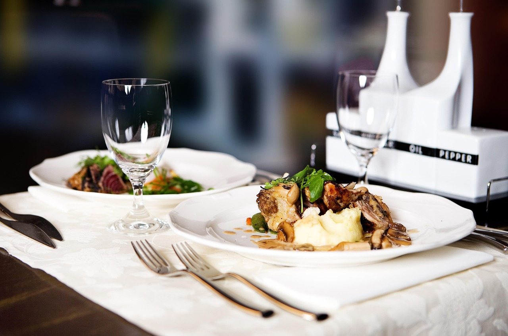

Welcome to BNE
Choose how you want to explore the city’s food scene.
Three tools, one clear entry point.
Selected for confident travelers
A clean starting point for visitors who want elegant dining suggestions, clear food safety signals, and routes that fit the city around them.

Welcome to BNE
Three tools, one clear entry point.
Browse standout venues on the Brisbane map, compare ratings, and prioritize food safety with confidence.
02Open several ready-made food journeys for solo travelers or groups before choosing the best sequence.
03Drag, reorder, and confirm your own route while keeping the overall journey readable on one screen.
SafeBite Selections
Curated Food Journeys
Start with a route, then move into the DIY planner when you want to adjust the order.
Open all routes
Begin the journey